mallid/pastelne-paevik/index.html
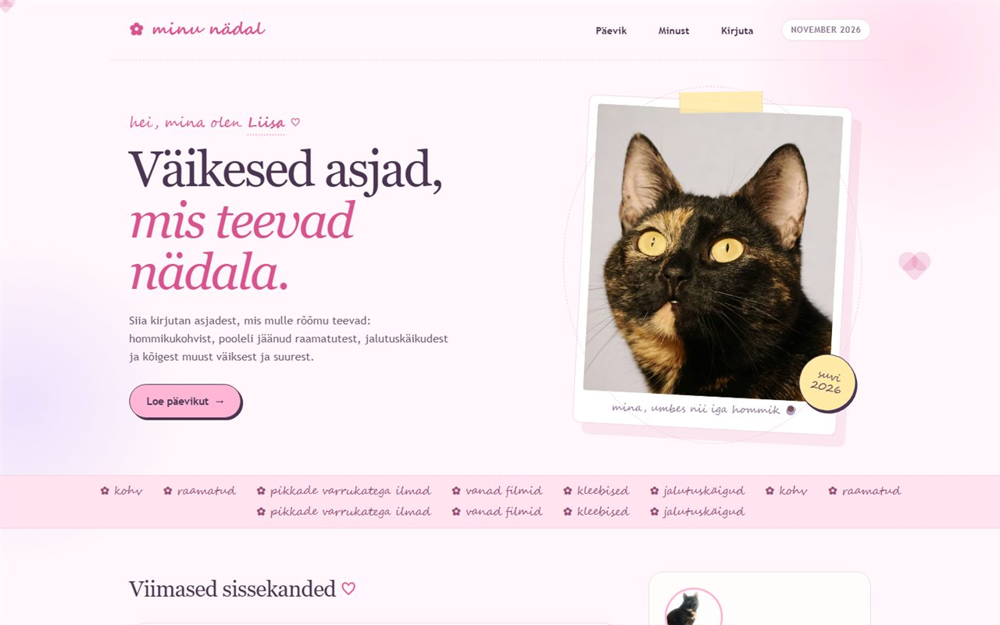
Pastelne päevik
01 · 0,9 MBPink, sõbralik ja veidi kleepsuline isiklik päevik. Kõige kergem alustada.
Kümme malli · INSA insapäevad
Iga mall on tavaline index.html + stiil.css + piltide kaust.
Laadi üks korraga või kõik koos, ava tekstiredaktoris ja otsi sõna „MUUDA“.
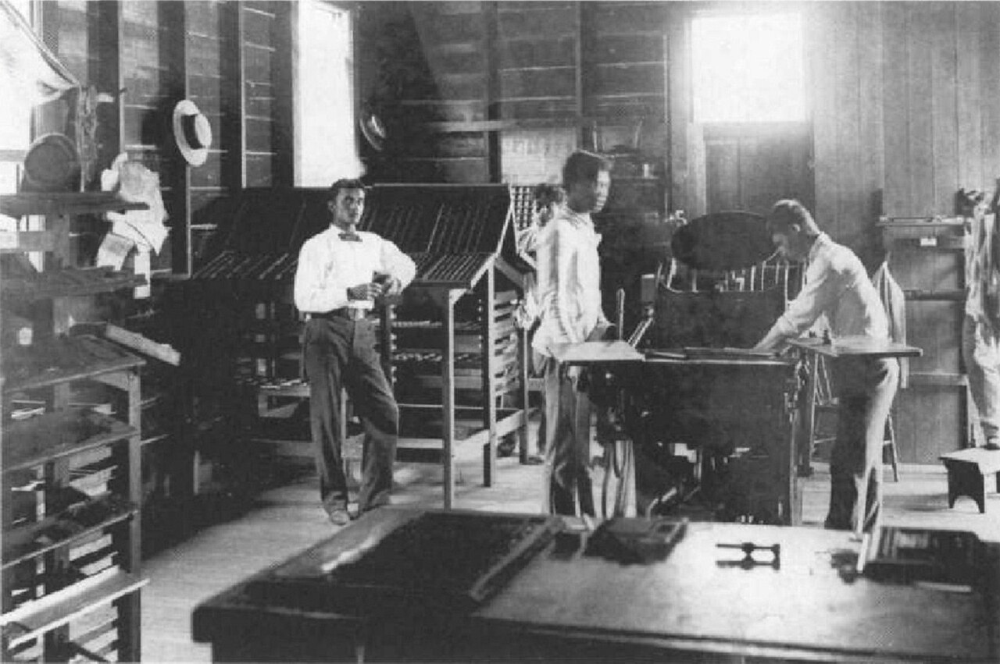

Pink, sõbralik ja veidi kleepsuline isiklik päevik. Kõige kergem alustada.

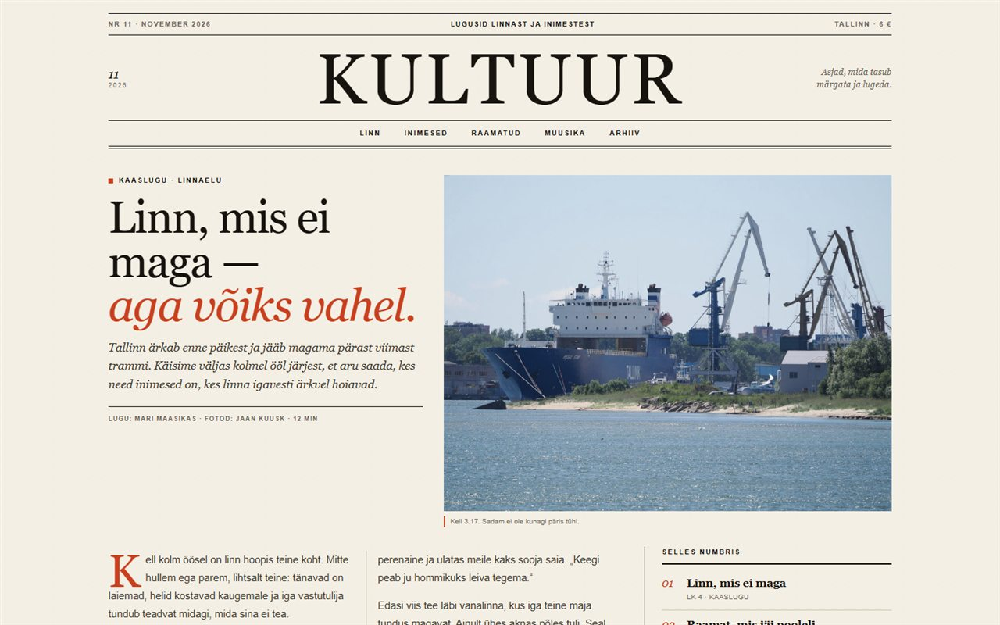

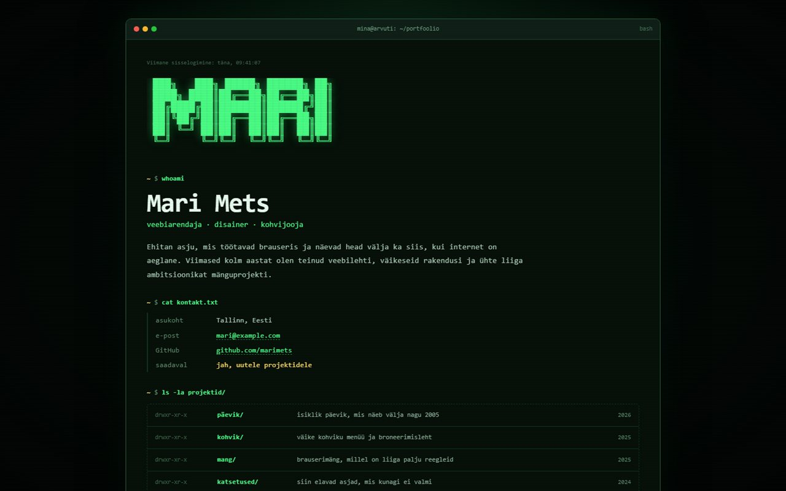
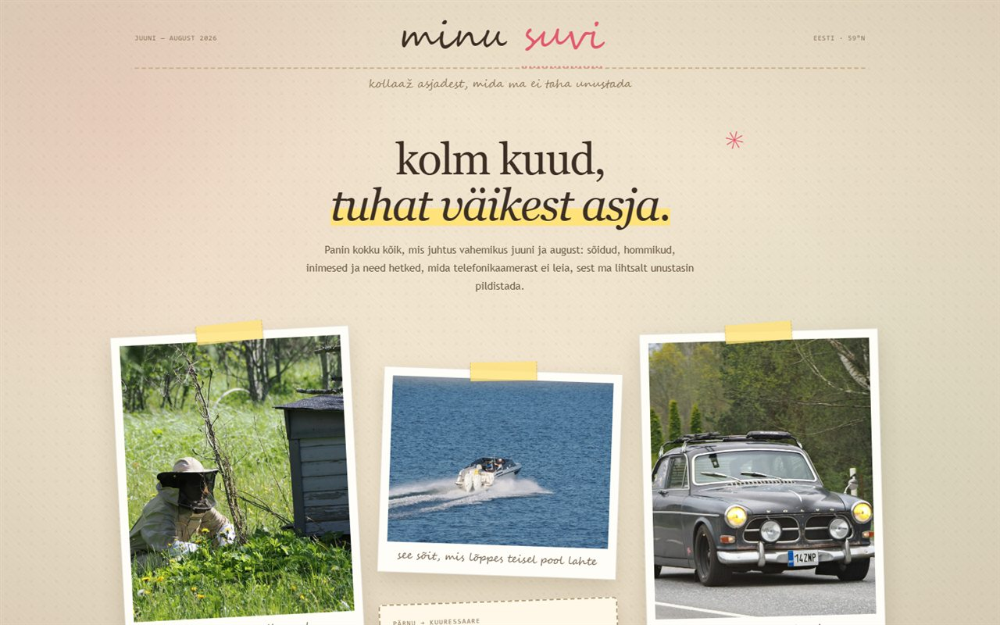
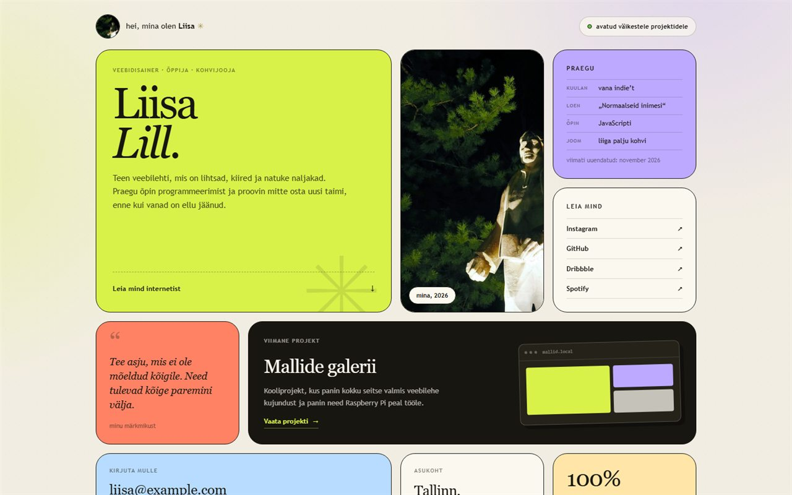
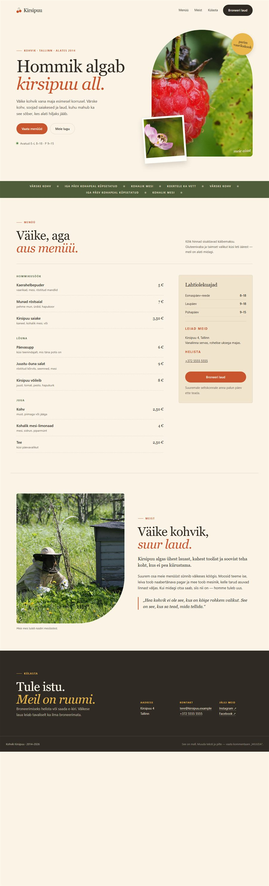

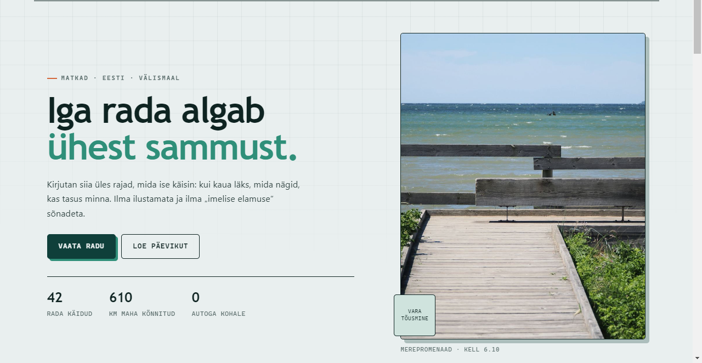
Kolm sammu
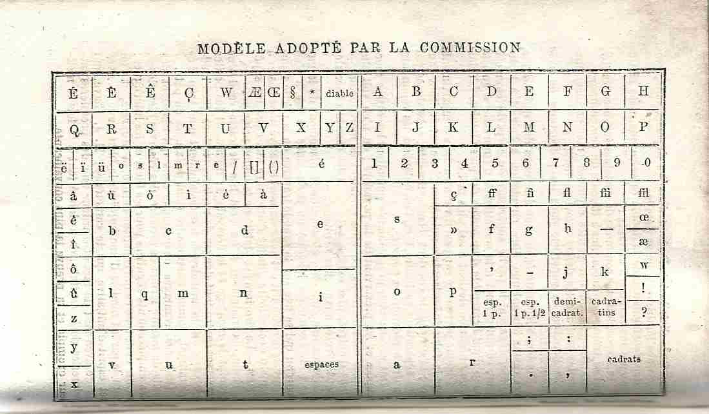
Laadi ZIP ja paki lahti — kausta jäävad index.html, stiil.css ja pildid/.
Ava index.html tekstiredaktoris ja otsi sõna MUUDA — need kommentaarid näitavad täpselt, mida muuta.
Kopeeri kaust Raspberry Pi peale (Nginxi juurkaust /var/www/html) ja ava leht võrgus.
Pildipank
Kogu töötoa pildivalik kategooriate kaupa, iga pilt eraldi vaatamiseks ja valmis failiteega.
Arhiiv · Internet Archive
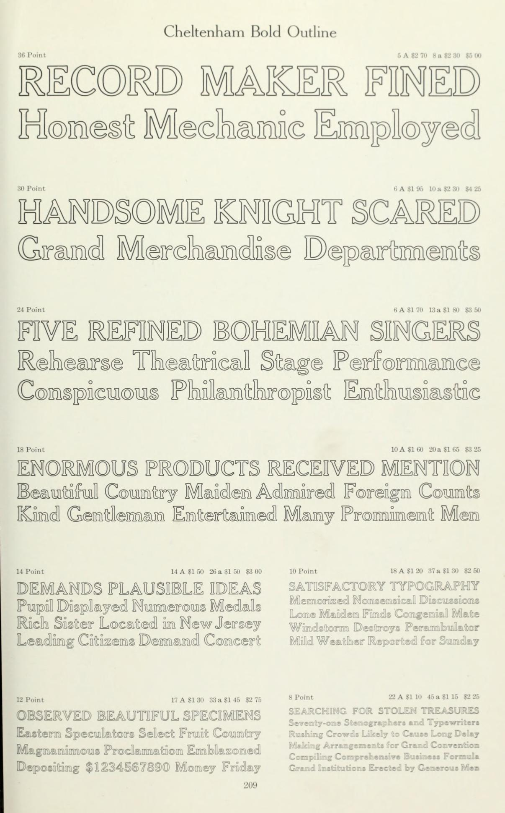
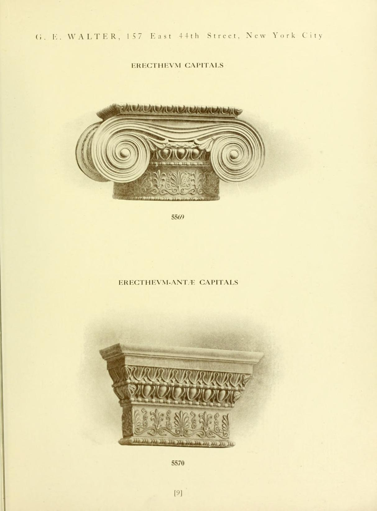
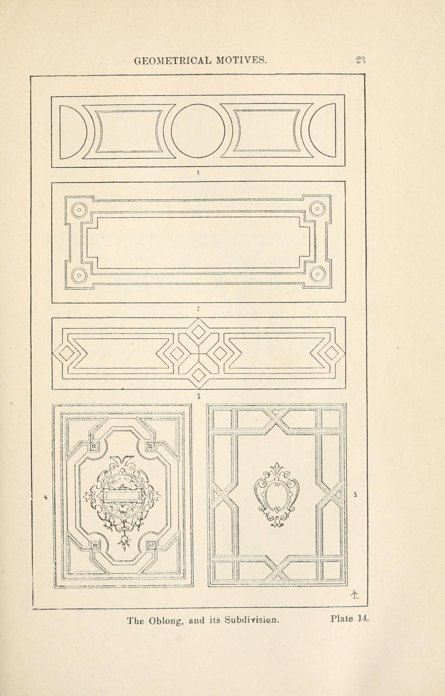
Trüki- ja kiviraiduritööde näidised Internet Archive'ist, avalik omand.
Malli eelvaade
Mall